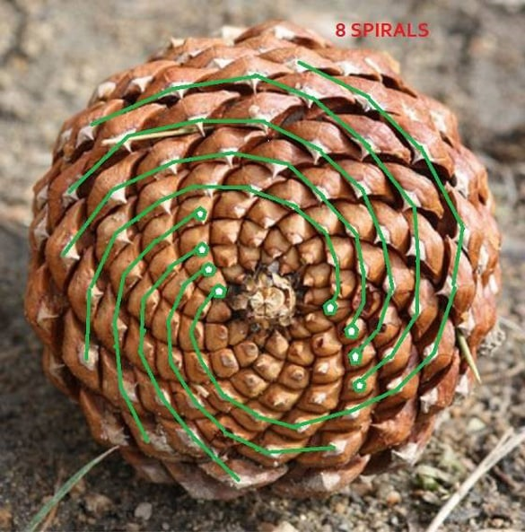
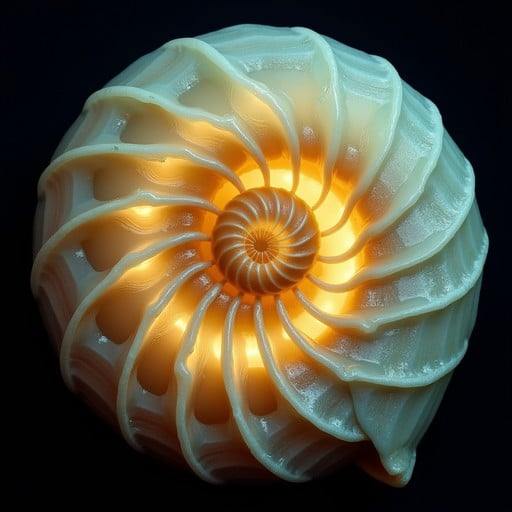
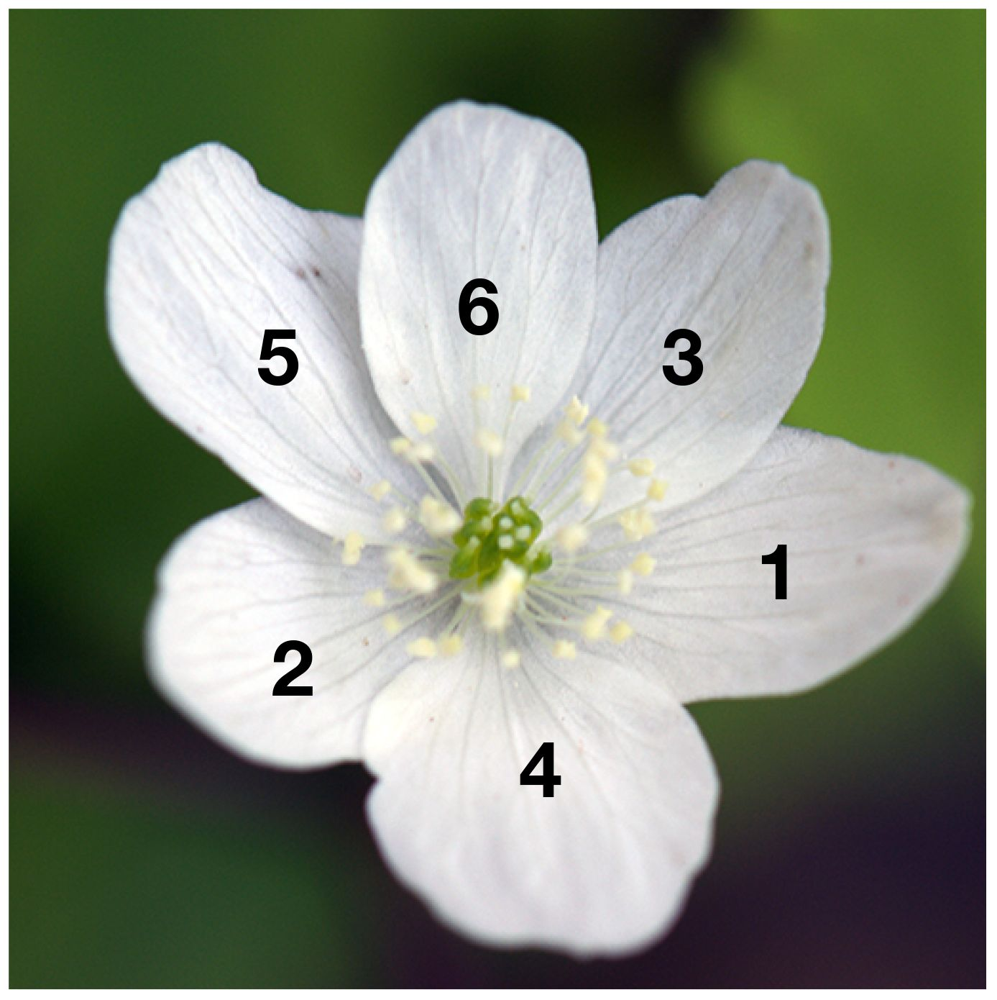
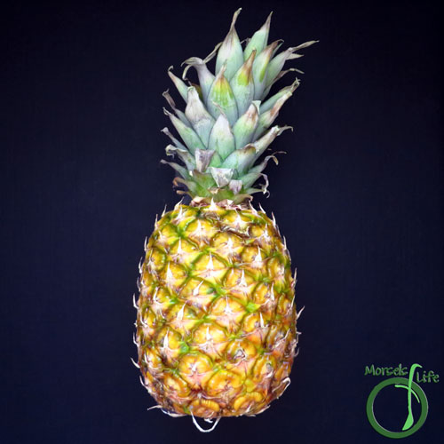
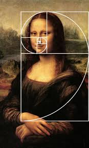
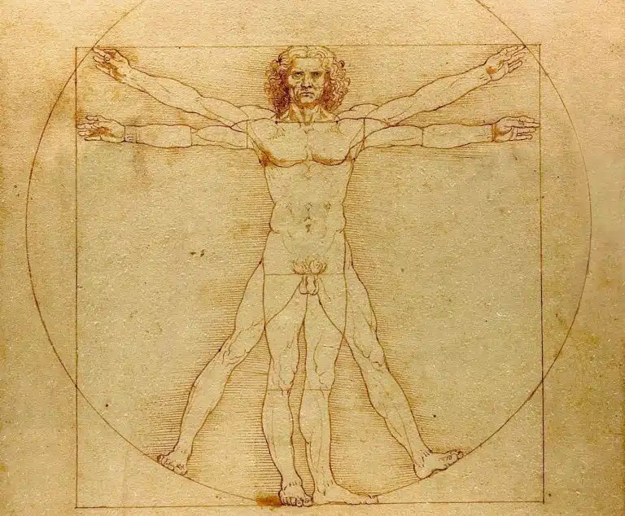

Pinecone Spirals
Count the spirals on a pinecone—most follow Fibonacci numbers.

Nautilus Shell
The logarithmic spiral of shells approximates the Golden Ratio for optimal growth.

Petals
Many flowers have petals in Fibonacci numbers (3, 5, 8, 13, 21).

Pineapple Spirals
The scales of a pineapple follow multiple Fibonacci spirals in different directions.

Galaxies
Spiral galaxies often form patterns related to the Fibonacci spiral.

Fingerprints
The whorls in fingerprints sometimes follow Fibonacci or Golden Ratio patterns.

Art & Architecture
Many famous artworks and buildings use proportions approximating the Golden Ratio.

Human Body
Some body proportions approximate the Golden Ratio, like the ratio of forearm to hand.